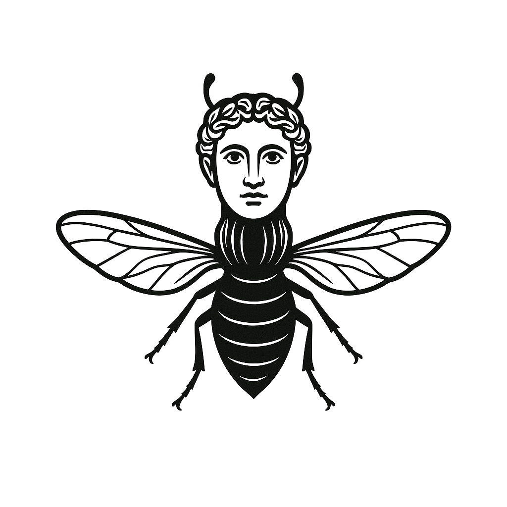

Gadfly Machines
Classical education in a digital age

What is it?
Gadfly Machines is a workshop where the Socratic method meets AI for humans — building thoughtful digital tools and experimental apps.
We’re currently in alpha.
Focus Areas
- Traditions of Thought
From the Great Books to the Socratic method, we draw from enduring conversations rather than fixed canons.
- Tools That Question Back
We explore how AI and interface design can spark reflection—not just deliver answers.
- Learning Systems, Rethought
Beyond platforms or classrooms: what new shapes can learning take when rooted in wonder, critique, and clarity?
- From Provocation to Prototype
We follow ideas from first questions to first tools—thinking as a mode of building.
Current Status
Alive. Early-stage. Privately building.
Gadfly Machines v0.1
Last updated: June 7, 2025
A project of Artist Arrow LLC
Contact:
connect@artistarrow.com
Onward, Artist Arrow. 🏹